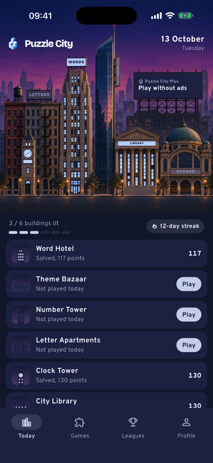
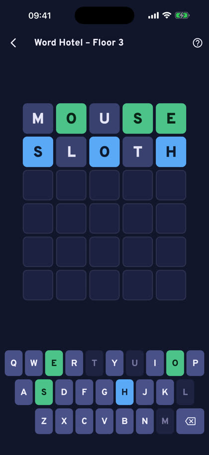
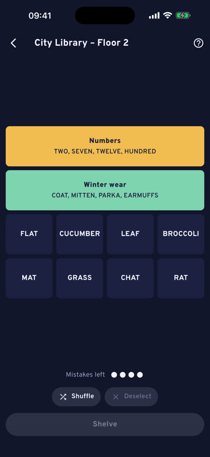
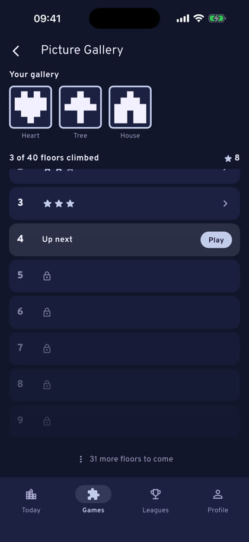
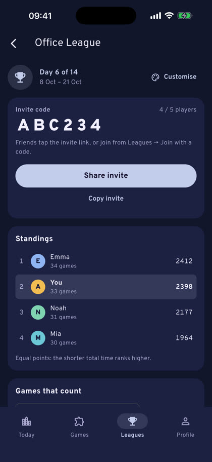
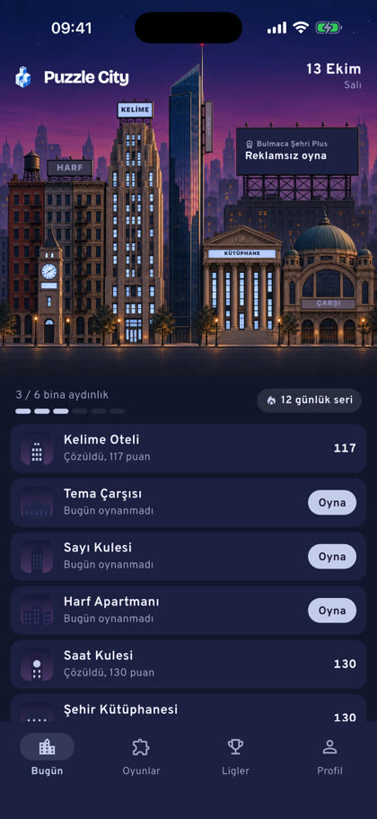
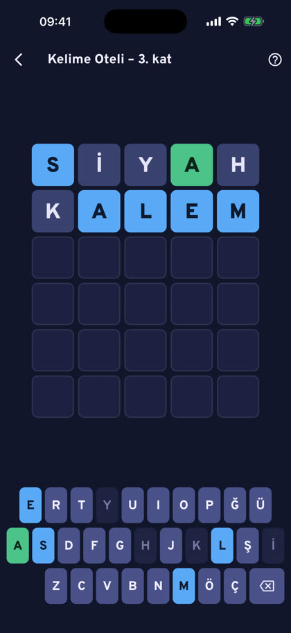
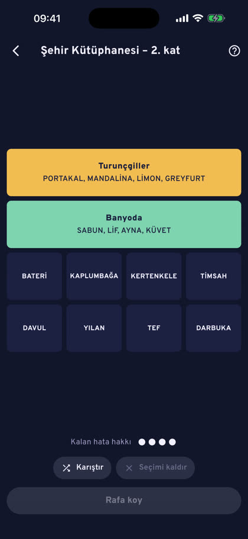
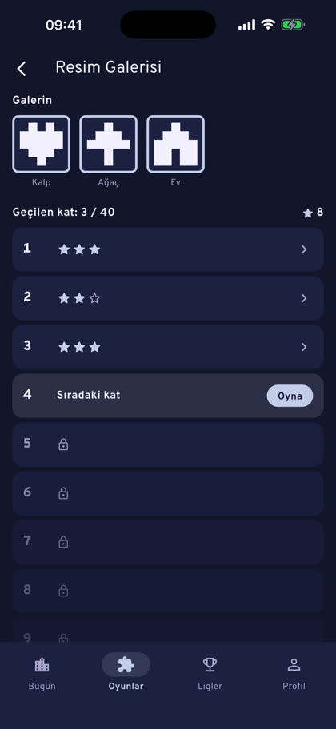
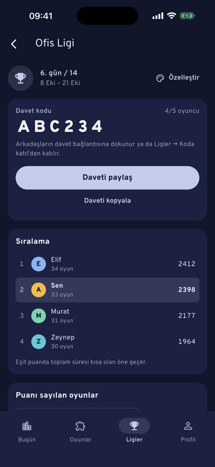

Press kit
Basın kiti
Puzzle City turns a daily puzzle habit into a city you light up. Six short puzzles arrive every day, each one a building in a skyline at dusk. Solve one and its windows light up; light all six and the city celebrates.
Bulmaca Şehri, günlük bulmaca alışkanlığını aydınlattığın bir şehre çeviriyor. Her gün altı kısa bulmaca gelir; her biri alacakaranlıktaki şehrin bir binasıdır. Birini çözdüğünde pencereleri yanar; altısını da yakınca şehir kutlama yapar.
The word puzzles are written separately for Turkish and English, not translated, so each language gets its own wordplay. Friends start a private league with an invite link and compete on points and speed for 7, 14 or 30 days, and every player is ranked in their city's monthly league.
Kelime bulmacaları Türkçe ve İngilizce için ayrı ayrı yazılır, çevrilmez; böylece her dilin kendi kelime oyunları olur. Arkadaşlar bir davet bağlantısıyla özel lig kurar ve 7, 14 ya da 30 gün boyunca puan ve hızla yarışır; her oyuncu kendi şehrinin aylık liginde de sıralanır.
Facts
Bilgiler
- Developer
- Geliştirici
- Muhammet Albayrak, independent developer, Türkiye
- Muhammet Albayrak, bağımsız geliştirici, Türkiye
- Platforms
- Platformlar
- iPhone, iPad, Android
- Languages
- Diller
- Turkish, English
- Türkçe, İngilizce
- Price
- Fiyat
- Free; optional Puzzle City Plus subscription (no ads, unlimited leagues, streak freezes)
- Ücretsiz; isteğe bağlı Bulmaca Şehri Plus aboneliği (reklamsız, sınırsız lig, seri dondurma)
- Release
- Çıkış
- 2026
- Contact
- İletişim
- alb.m@icloud.com
The daily buildings
Günlük binalar
- Word HotelGuess the five-letter word.
- Kelime OteliBeş harfli kelimeyi bul.
- Letter ApartmentsAn anagram that grows floor by floor.
- Harf ApartmanıKat kat büyüyen bir anagram.
- Number TowerReach the target with six numbers.
- Sayı KulesiAltı sayıyla hedefe ulaş.
- Theme BazaarFind the words of the theme.
- Tema ÇarşısıTemanın kelimelerini bul.
- City LibraryPut sixteen books on four shelves.
- Şehir KütüphanesiOn altı kitabı dört rafa diz.
- Clock TowerSolve a small mystery from the watchman's notes.
- Saat KulesiBekçinin notlarından küçük bir gizemi çöz.
The Games tab adds floors to climb at your own pace, picture puzzles in the Picture Gallery and the Memory Tower.
Oyunlar sekmesinde kendi hızında çıkacağın katlar, Resim Galerisi'nde resim bulmacaları ve Hafıza Kulesi var.
Screenshots
Ekran görüntüleri









